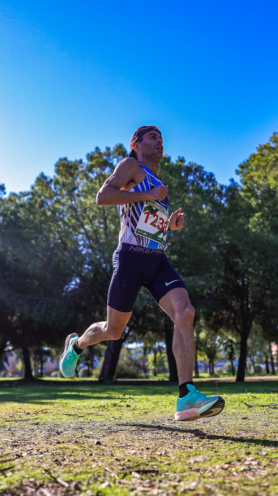

The XIV Carrera Popular Parque Tamarguillo took over Seville’s Este-Alcosa-Torreblanca district on 28 February, with start and finish set on the plaza beside Cortijo San Ildefonso, inside Tamarguillo Park. Held every year on Andalucía Day, the race is one of the city’s longest-running community road events, and this year’s edition drew a strong turnout under clear late-winter skies.
Runners chose between a 13km course and a shorter 6km route, both looping through the park before finishing at the plaza, while a full slate of children’s races kept the morning family-friendly. Organisers capped registration at 2,000 places — 1,500 for the adult distances and 500 across the school and children’s categories — and more than 1,000 runners ultimately took part.

The event is organised by Club Atletismo Los Lentos together with Create Acción Creativa de Eventos SL, with backing from the Este-Alcosa-Torreblanca District and Seville’s Instituto Municipal de Deportes. Entry fees stayed modest by design — as low as €7 for the 6km and €11 for the 13km in early registration, with children’s races priced at €3 — keeping the race accessible to local families rather than positioning it as a premium road event.

Image Media covered the race on the ground with a three-person team — Eduardo Castro, Paulo Nomade and Jose Ramon Moreno — capturing finish-line moments, the family and dog-friendly atmosphere along the course, and portraits of the competitive front-runners.
Galleries from the day are now live for participants to find and buy their photos at imagemedia.one, with the club and district organisers receiving a full highlight pack to help promote next year’s fifteenth edition.